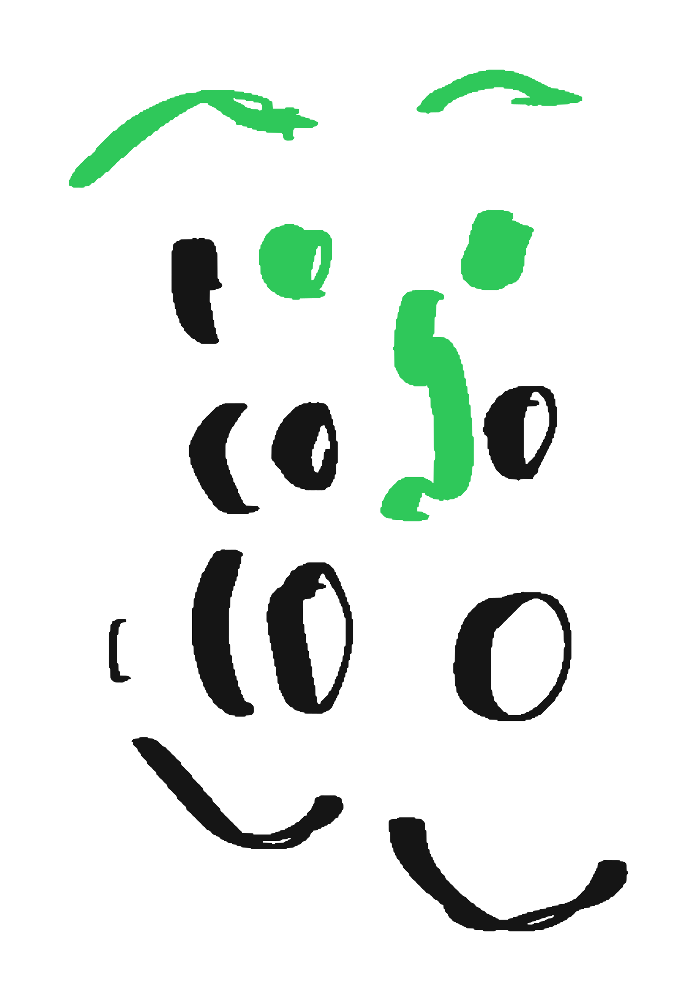

entrelampistas · mapas · mapa de temas del proyecto · móvil 390 + escritorio 1280
Mapas
Qué existe y cómo se relaciona. Dos ejes (criterio ■ · entornos ○); por ahora un solo tema, Habitabilidad digital, y próximos sin fecha. Sin color por eje: la diferencia la hace la forma. El progreso propio aparece solo como marca discreta, no como historial.
móvil · 390 × 844

Mapas
Tres temas. Cada uno con su ensayo, su mapa y sus conceptos; las herramientas llegan una a una.
m1 · mapa · retícula 2 col con filetes compartidos · forma = eje (■ ○), sin color · un tema activo en tinta + pensamiento de mantenimiento + los dos temas nuevos de criterio (■) con etiqueta «nuevo» · pestañas todos / criterio / entornos
mapas · entornos
tema 01 · entornos · sep 2026
Habitabilidad digital
¿Qué tipo de entorno es internet? Un ensayo, una herramienta para medirlo y los conceptos que usamos.
ensayo · 9 min
Habitabilidad digital
2 / 5
herramienta · 3 min
Índice de habitabilidad digital
comenzar
conceptos · 6
habitabilidad
enshittification
burbuja de filtros
economía de la atención
autonomía
espejo y molde
se relaciona con
Pensamiento de mantenimientocomparte «lo común»
m2 · tema · cabecera con forma de eje · dos piezas: ensayo (estado 2/5) y herramienta (comenzar) · conceptos como chips huecos → glosario · «se relaciona con» explica el porqué del vínculo
conceptos
14 / 31
enshittification
doctorow · 2023
[ɛnˌʃɪtɪfɪˈkeɪʃən] · sustantivo · sin traducción fija
La degradación progresiva de una plataforma: primero sirve a quien la usa, luego a quien paga, finalmente solo a sí misma, cuando irse ya cuesta demasiado.
Lo usamos para nombrar un ciclo que se repite en redes, buscadores y tiendas. Nombrarlo permite dejar de tratarlo como paisaje.
aparece en
Habitabilidad digital · 01 El entorno que nadie diseñóensayo
Índice · estructura (condición)herramienta
cerca
captura
coste de salida
lo común
‹ climacaptura ›
m3 · concepto · misma ficha que el term del ensayo, ampliada: definición en caja, nota de uso, dónde aparece, conceptos cercanos · navegación anterior / siguiente alfabética
escritorio · 1280 · matriz temas × piezas
iniciomapasbitácora · pronto
buscar⌘k
Mapas
Un tema por ahora. Cada fila es un tema; cada columna, un tipo de pieza. Lo tuyo aparece en verde.
m4 · escritorio · 3|9 · filtros por dos ejes · matriz temas × (ensayo, herramienta, conceptos, estado) · un tema activo, pensamiento de mantenimiento como criterio, un próximo sin fecha
‹ mapas · entornos
iniciomapasbitácora · pronto
buscar⌘k
tema 01 · entornos · sep 2026
Habitabilidad digital
¿Qué tipo de entorno es internet? Un ensayo, una herramienta para medirlo y los conceptos que usamos.
se relaciona con
Pensamiento de mantenimientocomparte «lo común»
ensayo · 9 min
Habitabilidad digital
Cinco secciones. Estás en la 02, el problema del lenguaje.
continuar 2 / 5
herramienta · 3 min
Índice de habitabilidad digital
Diez preguntas en cinco dimensiones. Sin cuenta, sin nota.
m5 · escritorio tema · 4|8 · izquierda: cabecera con forma de eje + «se relaciona con» · derecha: piezas en filas con tipo, título, una línea y estado o acción · conceptos como chips con salto al glosario
‹ mapas · conceptos
iniciomapasbitácora · pronto
buscar⌘k
Conceptos
31
abcdefghijklmnopqrstuv
atención■
autonomía○
captura■ ○
clima○
coste de salida○
cuidado■ ○
diseño persuasivo■
enshittification○
habitabilidad○
hábito■
interrupción○
lo común■ ○
mantenimiento■
persuasión■
enshittification
doctorow · 2023 · 14 / 31
[ɛnˌʃɪtɪfɪˈkeɪʃən] · sustantivo · sin traducción fija
La degradación progresiva de una plataforma: primero sirve a quien la usa, luego a quien paga, finalmente solo a sí misma, cuando irse ya cuesta demasiado.
Lo usamos para nombrar un ciclo que se repite en redes, buscadores y tiendas. Nombrarlo permite dejar de tratarlo como paisaje.
cerca
captura
coste de salida
lo común
aparece en
Habitabilidad digital · 01 El entorno que nadie diseñóensayo
Índice · estructura (condición)herramienta
‹ diseño persuasivohabitabilidad ›
m6 · escritorio glosario + concepto · 4|8 · izquierda: lista a–z con índice de letras y formas de los ejes donde aparece · derecha: ficha (definición en caja + nota + cerca + aparece en) · resuelve el «glosario completo» pendiente
decisiones tomadas ◆ a validar
ejes sin color · dos ejes desde 19-09: criterio ■ · entornos ○ (□ hábitos reservado); el eje se lee por forma y por filtro · verde solo para lo propio (leído, en curso, 2/5)
mapa = catálogo, no historial · el recorrido personal queda para perfil / bitácora · aquí solo una marca de estado por pieza
conceptos · glosario transversal de 31 entradas · la ficha es el term del ensayo ampliado, con «aparece en» como puente entre piezas
alcance · un tema (habitabilidad digital) + pensamiento de mantenimiento como criterio · próximos sin título ni fecha · 31 conceptos es cifra de ejemplo
ajustado en el recorrido · pestaña móvil «perfil» pasa a «bitácora» y el icono de mapas se unifica (4 cuadrados) en feed y mapas · glosario a–z resuelto en m6
bitácora · fuera de alcance: pestaña deshabilitada .35 «pronto» en móvil y escritorio · pendiente · búsqueda global ⌘k